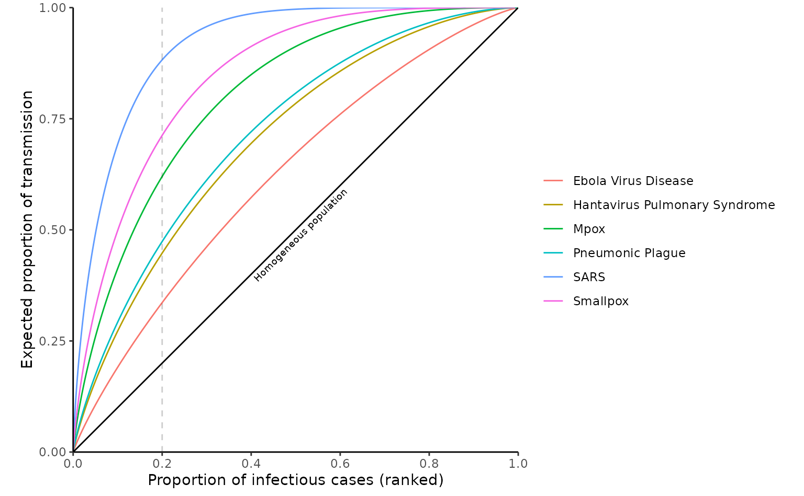
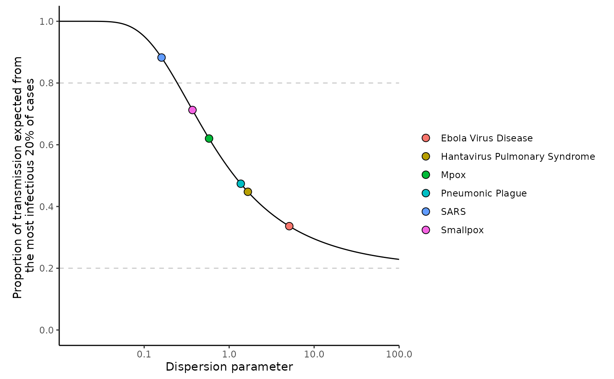

Methods for calculating the proportion of transmission
Source:vignettes/proportion_transmission.Rmd
proportion_transmission.RmdThis vignette explores the proportion_transmission()
function in {superspreading}. The function calculates what proportion of
cases we would expect to cause a certain proportion of transmission for
a particular infectious disease (e.g. “how much transmission comes from
the top 10% of infectious individuals?”)
To perform this calculation, we assume that the offspring distribution of disease transmission depends both on the distribution of individual variability in transmissibility, which we define using a Gamma distribution with mean , as well as stochastic transmission within a population, which we define using a Poisson process, following Lloyd-Smith et al. (2005).
If we put a Gamma distributed individual transmissibility into a Poisson distribution, the result a negative binomial distribution. This is defined by two parameters: , the mean of the negative binomial distribution and the average number of secondary cases caused by a typical primary case; and , the dispersion parameter of the negative binomial distribution and controls the heterogeneity in transmission. A smaller results is more variability (overdispersion) in transmission and thus superspreading events are more likely.
Poisson and geometric offspring distributions are special cases of
the negative binomial offspring distribution. By setting
to Inf (or approximately infinite,
)
then the offspring distribution is a Poisson distribution. By setting
to 1 the offspring distribution is a geometric distribution.
It is currently not possible to calculate the proportion transmission using the Poisson-Lognormal and Poisson-Weibull distributions (whose density and cumulative distribution functions are included in the {superspreading} package).
The proportion of transmission can be calculated using two methods,
both of which are included in the proportion_transmission()
function and can be changed using the method argument. The
first method focuses on transmission as it occurs in reality, accounting
both for variation in the mean number of secondary cases at the
individual and the stochastic nature of onwards transmission
within a population; the second method focuses only on variation in the
mean number of secondary cases at the individual level. The first method
is denoted
and the second
.
The
method is the default (method = "p_80").
The output of method = "p_80" and
method = "t_20" have different interpretations and cannot
be used interchangeably without understanding the differences in what
they are measuring.
The output of method = "p_80" gives the proportion of
cases that generate a certain proportion of realised transmission. The
most common use case is calculating what proportion of cases would cause
80% of transmission during an outbreak of the infection. Thus a small
proportion in the output <data.frame> means that
there is a lot of overdispersion in individual-level transmission. The
percent_transmission argument when
method = "p_80" is to set the proportion of
transmission.
The output of method = "t_20" gives the proportion of
cases that we would expected to produced by a certain proportion of the
most infectious individuals. This is commonly used to calculate what
proportion of cases are expected to be caused by the most infectious 20%
of individuals. A high proportion in the output
<data.frame> means that there is a lot of
overdispersion in the transmission. The
percent_transmission argument when
method = "t_20" is to set the proportion of most infectious
cases to calculate their proportion of total transmission.
The key difference is that in a realised large outbreak (i.e. one that includes stochastic transmission), it is highly likely that some individuals will generate no secondary cases. This is because even a non-zero expected number of secondary cases can produce a zero when drawn from a Poisson process.
Definitions
The formula for the method as stated in Endo et al. (2020) is:
where satisfies
Additionally, Endo et al. (2020) showed that:
The method calculates, as stated by Lloyd-Smith et al. (2005): “the expected proportion of transmission due to the most infectious 20% of cases, ”, given by , where is defined as:
is the probability density function (pdf) of the gamma distribution of the individual reproduction number .
For both methods the proportion of transmission can be modified using
the percent_transmission argument in
proportion_transmission() so they are not fixed at 80 and
20, respectively, for
and
.
There are two methods for calculating the
method, analytically as given by Endo et al. (2020), or
numerically by sampling from a negative binomial distribution
(proportion_transmission(..., simulate = TRUE). For the
purpose of this vignette to compare all of the methods we will term the
analytical calculation
,
and the numerical calculation
.
Now that the and methods have been defined we’ll explore the functionality of each, their characteristics and compare them, making note of any unexpected behaviour to watch out for.
First we load the {superspreading}, {ggplot2}, {purrr} and {dplyr} R packages.
Exploring each method
To show the proportion of transmission using both methods we can load
the estimates of
and
estimated from Lloyd-Smith et al. (2005),
which are stored in the library of epidemiological parameters in the
{epiparameter} R package, and the interoperability of {epiparameter} and
{superspreading} to directly supply the parameters for the offspring
distributions (<epiparameter> objects) to the
offspring_dist argument in
proportion_transmission().
library(epiparameter)
offspring_dists <- epiparameter_db(
epi_name = "offspring distribution"
)
#> Returning 10 results that match the criteria (10 are parameterised).
#> Use subset to filter by entry variables or single_epiparameter to return a single entry.
#> To retrieve the citation for each use the 'get_citation' functionHere we create a table with the estimates of the mean () and dispersion () for each disease from Lloyd-Smith et al. (2005).
diseases <- vapply(offspring_dists, `[[`, FUN.VALUE = character(1), "disease")
offspring_dists <- offspring_dists[!duplicated(diseases)]
diseases <- diseases[!duplicated(diseases)]
offspring_dist_params <- vapply(
offspring_dists, get_parameters, FUN.VALUE = numeric(2)
)
offspring_dist_params <- data.frame(
disease = diseases,
t(offspring_dist_params)
)
offspring_dist_params
#> disease mean dispersion
#> 1 SARS 1.63 0.16
#> 2 Smallpox 3.19 0.37
#> 3 Mpox 0.32 0.58
#> 4 Pneumonic Plague 1.32 1.37
#> 5 Hantavirus Pulmonary Syndrome 0.70 1.66
#> 6 Ebola Virus Disease 1.50 5.10Using these parameter estimates for the negative binomial offspring distribution of each disease we can append the calculated proportion of transmission caused by the most infectious 20% of cases, using the method, and the calculated proportion of transmission causing 80% of onward transmission, using the method.
offspring_dist_params$t20 <- do.call(
rbind,
apply(
offspring_dist_params,
MARGIN = 1,
function(x) {
proportion_transmission(
R = as.numeric(x[2]), k = as.numeric(x[3]), percent_transmission = 0.2,
method = "t_20", format_prop = FALSE
)
}
)
)[, 3]
offspring_dist_params$p80 <- do.call(
rbind,
apply(
offspring_dist_params,
MARGIN = 1,
function(x) {
proportion_transmission(
R = as.numeric(x[2]), k = as.numeric(x[3]), percent_transmission = 0.8,
method = "p_80", format_prop = FALSE
)
}
)
)[, 3]
offspring_dist_params
#> disease mean dispersion t20 p80
#> 1 SARS 1.63 0.16 0.8825175 0.1300095
#> 2 Smallpox 3.19 0.37 0.7125723 0.2405781
#> 3 Mpox 0.32 0.58 0.6201376 0.1609538
#> 4 Pneumonic Plague 1.32 1.37 0.4737949 0.3392229
#> 5 Hantavirus Pulmonary Syndrome 0.70 1.66 0.4476538 0.3023708
#> 6 Ebola Virus Disease 1.50 5.10 0.3363023 0.4315065It can be seen in the table above that when an offspring distribution has a smaller dispersion () parameter the proportion of cases produced by the most infectious 20% of cases is high, and the proportion of cases that produce 80% of transmission is low. The estimates for SARS demonstrate this point. Both metrics lead to the same conclusion that disease transmission dynamics for the 2003 SARS outbreak in Singapore are heterogeneous and superspreading is a important aspect of the outbreak.
The variability in individual-level transmission comes from modelling the individual reproduction number, as a gamma distribution, instead of assuming that the individual-level reproduction number is equal for all individuals, which would result in a Poisson offspring distribution (see Lloyd-Smith et al. (2005) Supplementary Material for more information). To visualise the inherent variability resulting from the gamma-distributed reproduction number and how that compares to the assumption of a homogeneous population we can plot the expected proportion of transmission against the proportion of infectious cases.
For this we will need to write a couple of custom functions.
# nolint start for `:::`
get_infectious_curve <- function(R, k) {
# upper limit of x when y = 0
upper_u <- superspreading:::solve_for_u(prop = 0, R = R, k = k)
upper_u <- round(upper_u)
u_seq <- superspreading:::lseq(from = 1e-5, to = upper_u, length.out = 500)
res <- lapply(u_seq, function(upper) {
integrate(
function(u) u * superspreading:::fvx(x = u, R, k),
lower = 0, upper = upper
)$value / R
})
expected_v_more_than_x <- 1 - unlist(res)
proportion_more_than_x <- 1 - superspreading:::pgammaRk(u_seq, R = R, k = k)
data.frame(
exp_t = expected_v_more_than_x,
prop_i = proportion_more_than_x
)
}
# nolint endWe can now reproduce Figure 1b in Lloyd-Smith et al. (2005) using the offspring distribution parameters obtained above.
infect_curve <- map(offspring_dist_params %>%
group_split(disease), function(x) {
get_infectious_curve(R = x$mean, k = x$dispersion) %>%
mutate(
disease = x$disease,
R = x$mean, k = x$dispersion
)
})
infect_curve <- do.call(rbind, infect_curve)
ggplot(
data = infect_curve,
aes(x = prop_i, y = exp_t, colour = disease)
) +
geom_line() +
geom_abline(slope = 1) +
geom_vline(xintercept = 0.2, linetype = 2, alpha = 0.2) +
scale_x_continuous(breaks = seq(0, 1, by = 0.2)) +
theme_classic() +
theme(
aspect.ratio = 1,
legend.position = "right"
) +
annotate(
geom = "text",
angle = 45,
size = 2.5,
x = 0.5,
y = 0.5,
vjust = 1.5,
label = "Homogeneous population"
) +
labs(
x = "Proportion of infectious cases (ranked)",
y = "Expected proportion of transmission",
colour = ""
) +
coord_cartesian(expand = FALSE)
This plot shows the variability in transmission owing to the
gamma-distributed individual reproduction number
().
If we take a slice through the above plot when the proportion of
infectious cases equals 0.2 (shown by the dashed line) we can calculate
the proportion of transmission caused by the most infectious 20% of
cases using the
proportion_tranmission(..., method = "t_20") function.
k_seq <- superspreading:::lseq(from = 0.01, to = 100, length.out = 1000) # nolint
y <- map_dbl(
k_seq,
function(x) {
proportion_transmission(
R = 2, k = x, percent_transmission = 0.2,
method = "t_20", format_prop = FALSE
)[, 3]
}
)
prop_t20 <- data.frame(k_seq, y)
ggplot() +
geom_line(data = prop_t20, mapping = aes(x = k_seq, y = y)) +
geom_point(
data = offspring_dist_params,
mapping = aes(
x = dispersion,
y = t20,
fill = disease
),
shape = 21,
size = 3
) +
geom_hline(yintercept = c(0.2, 0.8), linetype = 2, alpha = 0.2) +
theme_classic() +
theme(
aspect.ratio = 1
) +
scale_y_continuous(
name = paste(
"Proportion of transmission expected from",
"the most infectious 20% of cases",
sep = " \n"
),
limits = c(0, 1),
breaks = seq(0, 1, by = 0.2)
) +
scale_x_log10(name = "Dispersion parameter", expand = c(0, 0)) +
labs(fill = "")
The above plot replicates Figure 1c from Lloyd-Smith et al. (2005). It shows how different diseases have different proportion of transmission from the most infectious 20% owing to varying degrees of overdispersion ().
The plot uses an of 2, however, one characteristic of the method is that different values of do not influence the proportion of transmission, so the plot would look identical with other value of . This is because as shown the equation defining the method above the integral is divided by so that only control the proportion of transmission.
# For k = 0.5
proportion_transmission(
R = 0.1, k = 0.5, percent_transmission = 0.8, method = "t_20"
)
#> R k prop_80
#> 1 0.1 0.5 99.6%
proportion_transmission(
R = 1, k = 0.5, percent_transmission = 0.8, method = "t_20"
)
#> R k prop_80
#> 1 1 0.5 99.6%
proportion_transmission(
R = 5, k = 0.5, percent_transmission = 0.8, method = "t_20"
)
#> R k prop_80
#> 1 5 0.5 99.6%
# For k = 2
proportion_transmission(
R = 0.1, k = 2, percent_transmission = 0.8, method = "t_20"
)
#> R k prop_80
#> 1 0.1 2 94.9%
proportion_transmission(
R = 1, k = 2, percent_transmission = 0.8, method = "t_20"
)
#> R k prop_80
#> 1 1 2 94.9%
proportion_transmission(
R = 5, k = 2, percent_transmission = 0.8, method = "t_20"
)
#> R k prop_80
#> 1 5 2 94.9%This is not the case for , where changes in both and influence the proportion of transmission.
# For k = 0.5
proportion_transmission(
R = 0.1, k = 0.5, percent_transmission = 0.8, method = "p_80"
)
#> R k prop_80
#> 1 0.1 0.5 6.71%
proportion_transmission(
R = 1, k = 0.5, percent_transmission = 0.8, method = "p_80"
)
#> R k prop_80
#> 1 1 0.5 22.6%
proportion_transmission(
R = 5, k = 0.5, percent_transmission = 0.8, method = "p_80"
)
#> R k prop_80
#> 1 5 0.5 29.3%
# For k = 2
proportion_transmission(
R = 0.1, k = 2, percent_transmission = 0.8, method = "p_80"
)
#> R k prop_80
#> 1 0.1 2 7.3%
proportion_transmission(
R = 1, k = 2, percent_transmission = 0.8, method = "p_80"
)
#> R k prop_80
#> 1 1 2 35.6%
proportion_transmission(
R = 5, k = 2, percent_transmission = 0.8, method = "p_80"
)
#> R k prop_80
#> 1 5 2 48.9%One thing that was mentioned above is that the interpretation of the and methods are not interchangeable, additionally, and are not equal. Stated differently, the method to calculate the proportion of transmission that cause 20% of cases, and the method to calculate the proportion of transmission caused by the most infectious 80% are not equivalent. It is also the case that , thus .
Here we vary
and
and show that by setting the
method to percent_transmission = 0.2, and the
method to percent_transmission = 0.8 the two cannot be
interchangeably interpreted as outlined in the box above.
# R = 1, k = 0.5
proportion_transmission(
R = 1, k = 0.5, percent_transmission = 0.2, method = "p_80"
)
#> R k prop_20
#> 1 1 0.5 2.45%
proportion_transmission(
R = 1, k = 0.5, percent_transmission = 0.8, method = "t_20"
)
#> R k prop_80
#> 1 1 0.5 99.6%
# R = 3, k = 2
proportion_transmission(
R = 3, k = 2, percent_transmission = 0.2, method = "p_80"
)
#> R k prop_20
#> 1 3 2 5.86%
proportion_transmission(
R = 3, k = 2, percent_transmission = 0.8, method = "t_20"
)
#> R k prop_80
#> 1 3 2 94.9%Here we show that and .
1 - proportion_transmission(
R = 1, k = 0.5, percent_transmission = 0.8, method = "p_80",
format_prop = FALSE
)[, 3]
#> [1] 0.7735753
proportion_transmission(
R = 1, k = 0.5, percent_transmission = 0.2, method = "t_20"
)
#> R k prop_20
#> 1 1 0.5 65%
1 - proportion_transmission(
R = 1, k = 0.5, percent_transmission = 0.2, method = "t_20",
format_prop = FALSE
)[, 3]
#> [1] 0.3501798
proportion_transmission(
R = 1, k = 0.5, percent_transmission = 0.8, method = "p_80"
)
#> R k prop_80
#> 1 1 0.5 22.6%The method allows for true homogeneity when (), whereas the method does not allow for true homogeneity ().
proportion_transmission(
R = 1, k = Inf, percent_transmission = 0.8, method = "p_80"
)
#> Infinite values of k are being approximated by 1e+05 for calculations.
#> R k prop_80
#> 1 1 1e+05 43.2%
proportion_transmission(
R = 1, k = Inf, percent_transmission = 0.8, method = "t_20"
)
#> Infinite values of k are being approximated by 1e+05 for calculations.
#> R k prop_80
#> 1 1 1e+05 80.1%